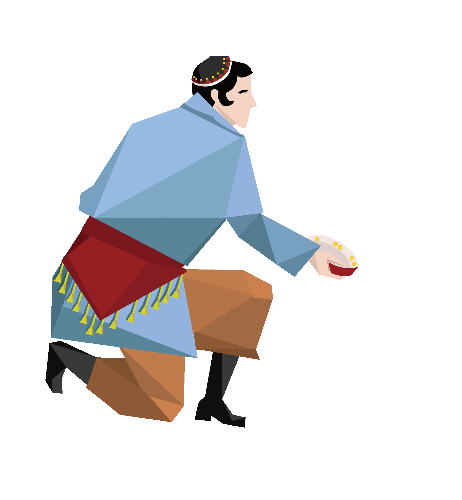
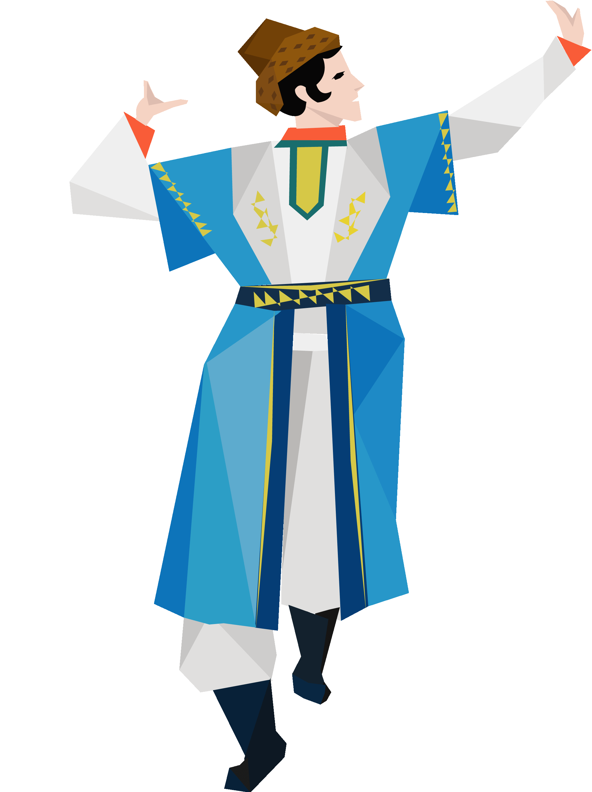
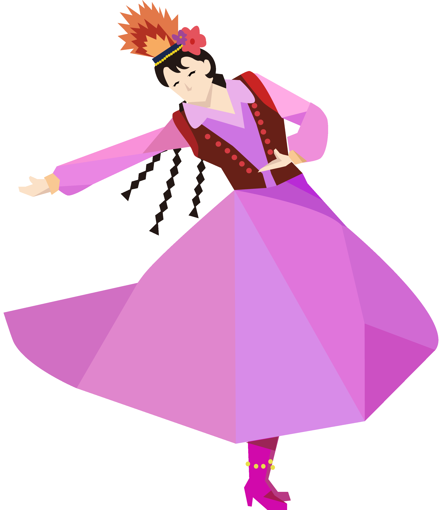
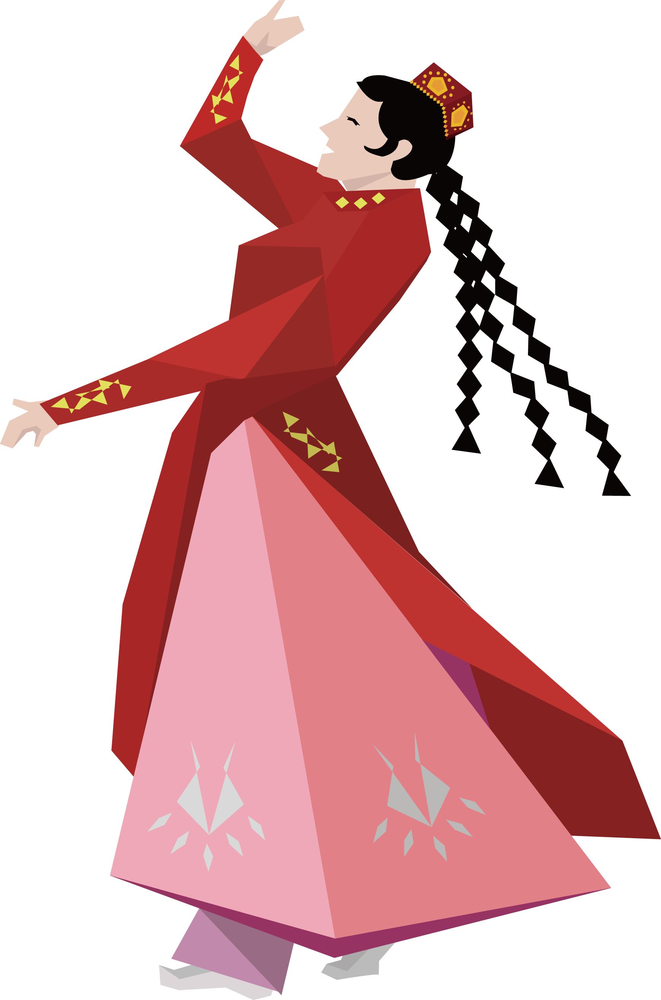
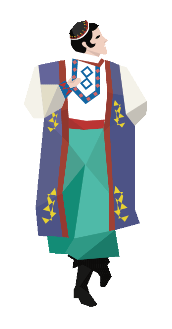
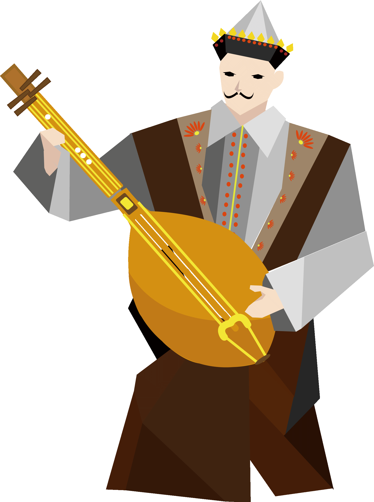
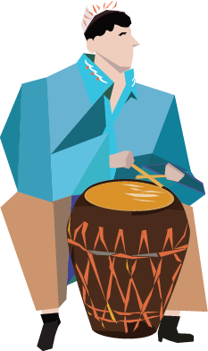
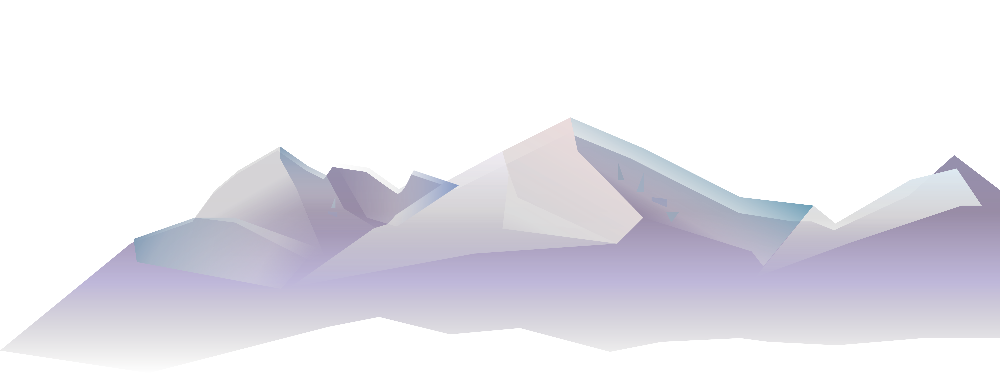
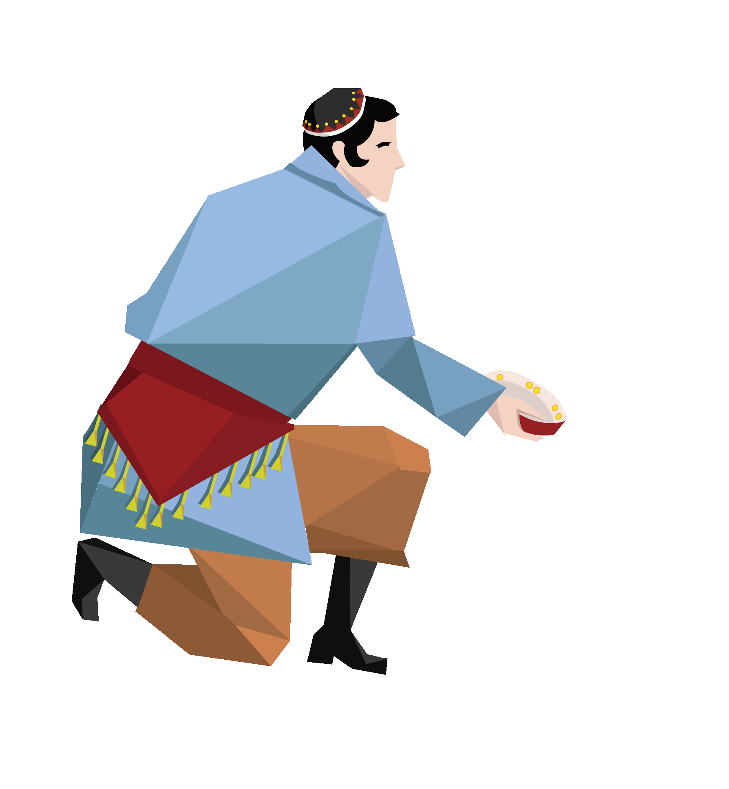
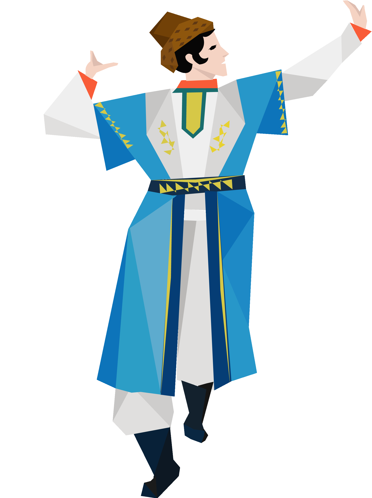
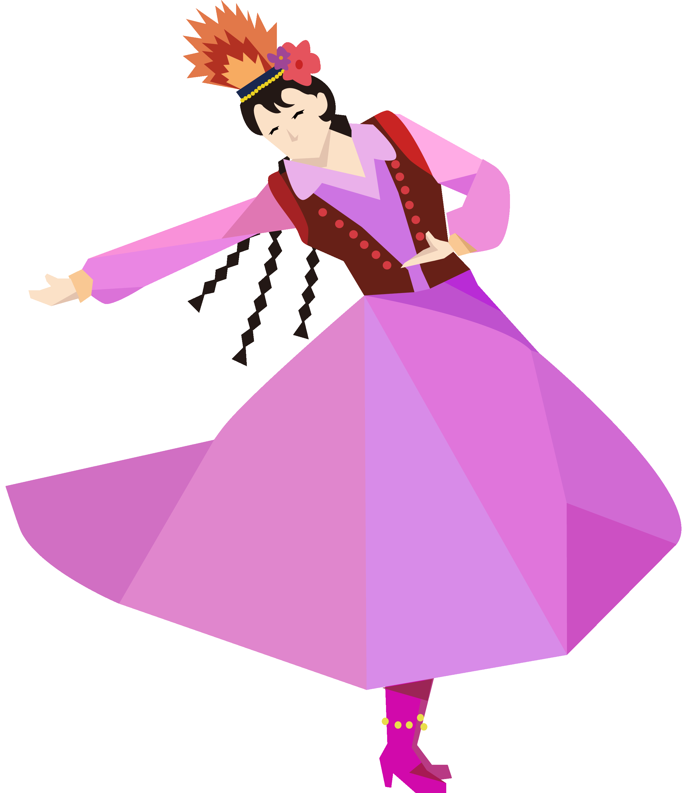
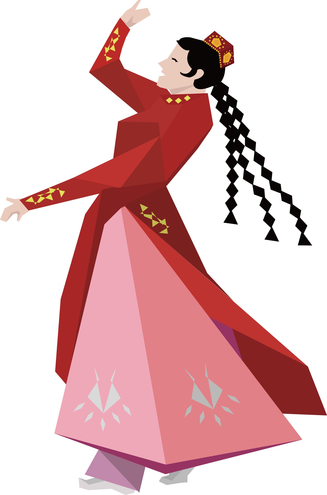
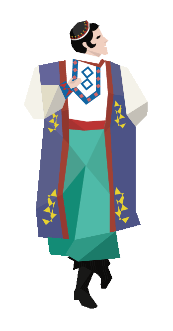
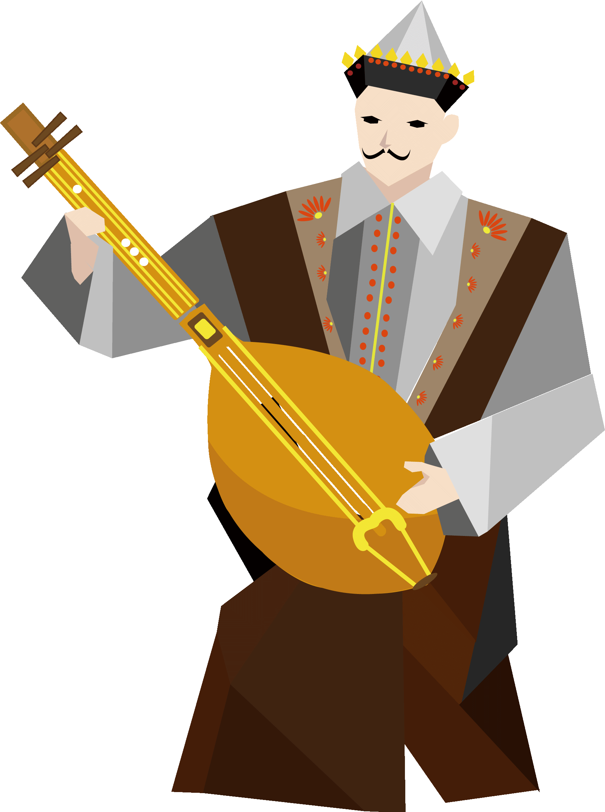
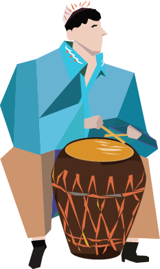
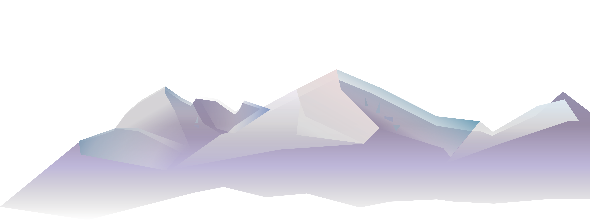
群众性节庆活动 诺鲁孜节第一天，表演达瓦孜、沙尕迪（“面色发白”之意，可能是因 为第一个人在表演时面色发白，故以此称谓的一种文体活动）。艺人敲锣打 鼓，吹唢呐许久，告诉人们诺鲁孜节已经开始了，人们奔走相告，结伴而行 ，走出城外，在诺鲁孜广场选看自己中意的节目表演，唢呐声停，各种表演 紧接着开始。下午，唢呐声再起，围观在不同场地的观众会不约而同地聚集 到那惊心动魄的达瓦孜表演场地，观看惊险无比的高空行走表演。那时的达 瓦孜艺人都是以家族为单位演出，往往来自不同的地方，但所使用的都是一 个立架，不另外立柱拉绳。今天是这家的，明天是他家的，轮流表演，一般 情况下维持一周左右。 诺鲁孜节的乐队歌唱哈密本卡姆，每天有新人，故观众百看不厌，日日 观众如潮。“登顶”是达瓦孜表演的“压轴曲目”，又是诺鲁孜节近尾声的 象征。这一天，一般是由最负盛名的艺人做表演。如果这时如果这时有消息 说“达瓦孜之圣”阿西木·阿吉前来表演，不但城里万人空巷，就是那些远 在百里之外的人也会徒步连夜赶路前来观看，还有很多人夜宿广场，只为占 据一个有利的观看角度。待达瓦孜艺人完成“登峰”后的最后的一个动作， 早已有人把一匹匹彪悍的骏马绑在立柱上，艺人着陆后，有人将最好的马匹 敬献给表演最出色者，并有人为他着袍戴帽，恭敬地将英雄扶上马鞍，其它 马匹则赠送给其它艺人，鼓乐声中，艺人们骑马谢幕。